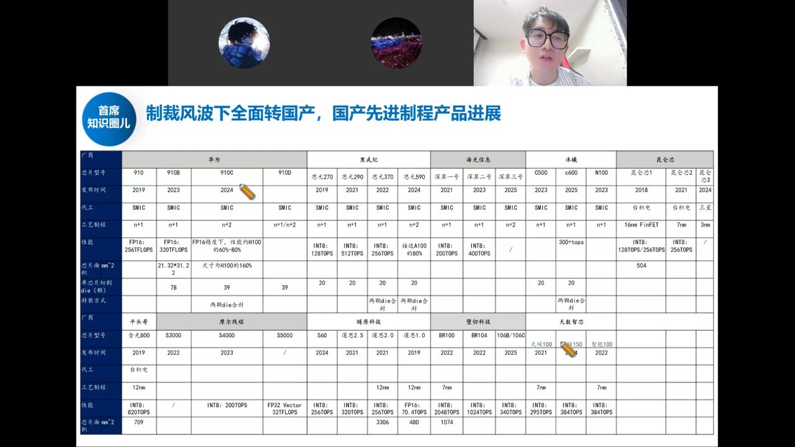
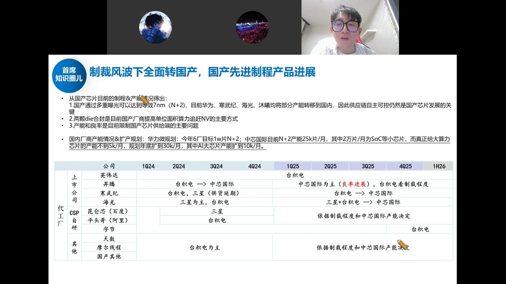
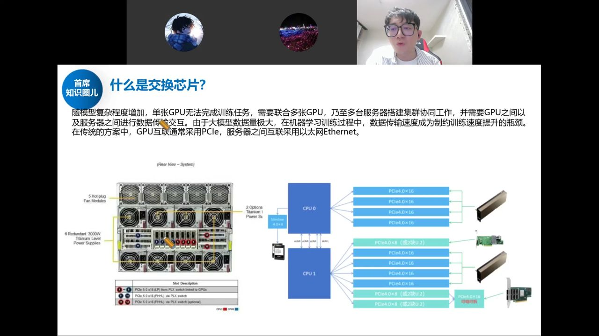

国产算力芯片的国产化大背景复盘：以寒武纪为"发令枪"，梳理 AI 芯片现状与云厂供应链、 国产先进制程产品全景、中芯 N+2 产能瓶颈，以及算力/存力/运力三条主线——尤其是此前未被充分挖掘的"运力"（互联交换芯片）。
半导体当前最大看点就是国产算力芯片的国产化。寒武纪去年还亏损、今年却冲到 5000–6000 亿市值，本质是把明后年爆发的空间提前打到今年——市场发现了确定性。
选股三要素：① 行业处于上升阶段、空间巨大且有利润空间；② 行业中格局好/定位稀缺/壁垒高的公司；③ 有政策推动。涨得猛的国产算力票，基本都是"大赛道 + 龙头稀缺标的"。
寒武纪的三个变化：① 下一代产品（690/580S）在阿里、字节等大厂验证，评价是"国内最强的卡"；② 中芯解决了供给侧代工，盛合晶微/通富解决封测，需求侧+供给侧形成闭环；③ 政策排查 H20 安全隐患、指导互联网厂商能不买就不买。另有"明年 50 万颗订单"传闻与定增落地。
23 年英伟达推阉割版 H20 专为中国市场，本想压制国产；但今年 4 月特朗普无限期禁售 H20，即使后来解禁，本质已不是美国给不给，而是工信部不让国内采购——H20 是阉割版会压制国产生态，且有后门风险。政企采购基本 70% 用华为昇腾，H20 政企渗透率几乎为零。
空间测算：阿里 2026 财年约 1200 亿支出、其中 400–500 亿买 AI 算力卡；全国全年可能近 300 万张算力卡。老黄给中国区的空间今年约 500 亿美金、27 年达 8000 亿人民币——一旦把英伟达踢出去，国产算力卡供应链会"爆炸"。
国内走在最前的三家：华为昇腾、寒武纪思元、海光；阿里平头哥、沐曦、摩尔线程、燧原、天数、壁仞等加速追赶。

国内 AI 芯片最大难题就两个：先进制程晶圆产能 和 CoWoS 封装能力。

CoWoS：把 HBM 与 GPU Logic 合封在基板上，interposer 介质层由中芯做，整封测交给盛合晶微、通富、长电、甬矽。这两家最近猛扩 CoWoS 产能——供给侧两大痛点同时好转，是国产 AI 芯片出现向上拐点的信号。
底座是半导体制造与封装（传统封装→先进封装），算力这块先进封装主要就是 CoWoS。设备材料、封测会是本轮行情的补涨环节（非前置）。
单张 GPU 无法完成训练，需多张 GPU、多台服务器组集群；大模型数据量极大，数据传输速度成为制约训练速度的瓶颈。传统方案：GPU 互通用 PCIe，服务器之间用以太网 Ethernet。

结论：AI 芯片（寒武纪为主）是发令枪，打开板块空间；后续接力看互联交换（运力）、晶圆代工（中芯/华虹），以及设备材料封测的补涨。核心跟踪两大供给侧痛点——先进制程产能、CoWoS 产能的爬坡进度。